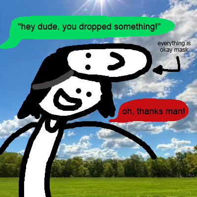
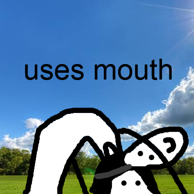
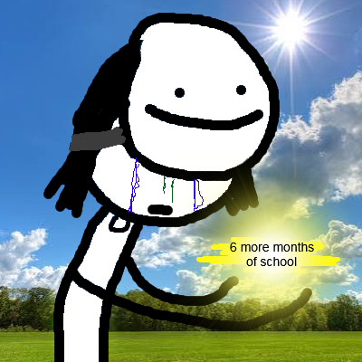
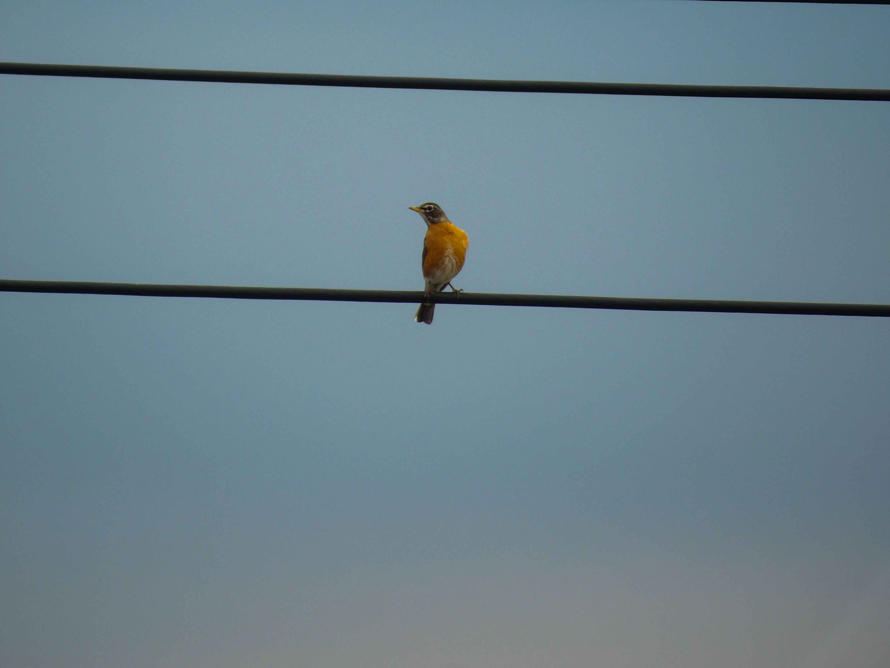

☆ TIMBLOG ☆
"Ohhh, just use your Twitter..." - Some guy reading this right now
"But... the character limit..." - Tim responding to that guy
Tim General Update #3
Well folks, it's that time of the month again! Summer has begun and I'm still more than happy to be here. I have a couple of updates to share, so I thought that I would write a new blog post instead of talking to myself in the mirror or, uh, something voidly akin to that. Are you tanning well? enjoying the sun? yeah? because I sure wasn't. What a terrible fifth of July I had man, I caught the worst sunburn of my entire friggin' life dude. "suicide-itch" was probably the most uncomfy sensation I've ever has the displeasure of experiencing, but I guess that's what I get for sleeping in the pool with my back-turned! I wouldn't wish that feeling on the worst person ever made, whoever you think that is...
On to more important things, I am now estimated to graduate this upcoming spring... I had anticipated a fall 2026 graduation, yes, but well, you know, life happens. im not having good experiences with a particular math course and I - oh, oh, man I don't even want to talk about it. Even the slightest thought of it makes me want to go eat all the gravel in my driveway. Matter of fact, eating some right now. in my room. mmmm the graval



depicted above is a small comic about the frustrations of having to go to school for another six months.
Word on the street is that it was academically healthier for me to split my next semester into two more semesters anyways, since the courses that I was planning on taking were three of the most difficult courses in my curriculum and it, as my advisor said: "... would have been brutal." This little "academic space-out" move will give me more time to blossom my portfolio, sharpen my developer grindset, and better retain the information I learn going forward (let me cope). I feel like in the grand scheme of it all, this is really just another six months that we will all likely forget about and move past anyways (coping). I really do have the rest of my life to not be in college, so, I'm not actually as upset about it as I'm acting in this blog post. There's really no reason to rush, and I have all the support I could ever ask for (blessed cope). Even though I was SO EXCITED TO FINALLY BE DONE, this, in the end, was likely the best decision for my career... (acceptance cope)
I feel like I'm not even that BIG of a computer science guy... some people live at the keyboard and die by it, but if I could make a living and die behind, say, a super busy high-traffic bar / pub / club as a silly and spry charismatic bartender, I freakin' probably would. the more theory-heavy courses in my curriculum have never really appealed to me, I love to code and structure visual projects, but when it comes to sitting there for hours on end and talking about algorithms and other related jargon, it never exactly made me swoon. While I am pretty good at it, I feel like, as a creator, there's just something more to life and it's important I hold on to that. I mean, hey, you should too, man, whatever you do, always remember that there's an entire world out there beyond whatever it is that you're going through... I do hope that, if the field embraces me post-graduation, I could build something meaningful. Something that could help people, know what I mean? I'm graduating college next year fully expecting to spend every hour beyond graduation building a project on my own terms that could change / impact lives in an impactful way. Whether it's a game or some other software, I want to use my knowledge and creativity to help others. Badly. Like, so, so badly you simply have no idea.
With this college extension, I just want to put it out there that, all jokes aside, I'm not feeling in any type of way "set back" and, nor does this possess any significant relevance to the release timeline of ANY of my other upcoming projects... Which speaking of, I started working on THE WRATH OF MORRISWORM 404 REMASTERED. I did it, it has begun. I've been cleaning our original scripts for the last two to three days now in my spare time, and, woof, boy it was real freakin' messy (sorry Vin!). I have a lot of ambitiously fun ideas for the remaster, though. A lot of new content is going to be added just because it can be. I reached out to Tom (the original artist for MORRISWORM!) and he said that he was INTERESTED in helping with the remake process! He suggested a lot of great and really ambitious ideas that I plan on adapting as soon as I finish perfecting the prototype content... I don't want to reveal too much right now, but it's looking great and I'm really happy to collaborate with a like-minded visionary! it's refreshing! I didn't think I would have it in me to start this soon, but here we are, working on it! Let's hope development goes smoothly!
That's all I have for now everybody, I'm trying to keep the updates around here to a monthly thing so that I don't bomb you all at once. I need to lock myself in a room with FL Studio open on da PC. Even if it's just there, running idle. I Need to do that even just 1% more than I do. I think I need to be a liiiiittle more about the music, know what I'm sayin'? I've been working on new music finally, and I do plan on finishing the MORRISWORM ost with this remaster. I need more sounds for my worlds. Haha yeah, and hey, as always, so much love everybody. Stay productive and just remember that if nobody cares, I do, and I always will. Okay, now, please direct your attention to this lovely obin friend captured in such quality by kayleigh. Thank you!

depicted above is an obin captured by kayleigh.
Tim General Update #2
It's me again! Hello everybody, haha, hi. I've been REALLY enjoying the warm weather. Isn't it so damn crazy to think that summer hasn't even started yet? There's so much potential for happiness, and even MORE potential to CREATE! A little personal, but I've been doing really well at my job and came to the joyful realization that I could have even more time to NOT work because of that... and this is a big deal to me because it finally means that I can properly dedicate time to watering my flowers... and by flowers, I mean my art... watering... my... art... uh, yeah.
I haven't started working on THE WRATH OF MORRISWORM 404 REMASTERED, but I DID get a chance to look-over the over-a-year-old unity files, and oh, oh boy, it's like I'm reading a book written in a foreign language. I can't remember where anything is at all, it's so weird. I haven't opened this software in such a long time, it feels like the program is covered in digital dust whatever the fuck that is. This is likely a project that I will tackle closer to the middle of the summer. I plan on finishing the soundtrack, re-recording voice lines, fixing various bugs that we spotted during our demo, remaking the opening cutscene, adding an outro sequence, fixing the final battle, and so so much more. Ambitious, but ambitious is my middle name. I guess we'll talk more about this at a later date, but don't think that I forgot about what I said last month!
I am taking TWO classes this summer; one of them regarding mathematics, and the other one regarding web development. I am on the hunt for licenses and certifications at the moment, so I made the decision to start with the simple stuff. For somebody who anticipated a pretty chill summer, I gave myself quite a meal on the plate. Not a problem for a hungry fellow like me though. I'll tough my way through it, even if it kills me.
I added a resources tab up there, see it? Why'd I do that? Well, I finished a project in my web development course and it made me think... I could share resources that I use, in the hopes that it could help other people the same. Even if it isn't much, it's still a whole-other use-dimension for this currently very little-purpose website, no? While designing it, I decided to use the same style sheets / format used in my projects.html file, so, really, it wasn't a lot of work to write at all. I also added a few more social medias to the front page, and cleaned out my contact socials to only be socials you could contact me with, but, that's not as significant as an entirely new tab. I made the cards within the categories of each resource genre / project genre a PASTEL color instead of the same gradient as the accordion dropdown. Your eyes will thank me... Oh, and I've been brainstorming some other possible use-cases for this website. You know, beyond just a collective of static tim junk that's simply on display for your eyes and, well, not much else? It's not a very interactive environment, and that is something that I would like to change... somehow... I'm in the early stages of planning it. Going forward around here, you never know what might pop up! This could become much more than just a library of tim; could be more of a... city of tim... or a town... or a home. At least a home.
I guess that's all I really have to say for now. Very excited for Deltarune: Chapter 5. Shoutout Toby Fox. Shoutout to Gooseworx and the Glitch Team on that circus show... statistics will inform you of the craziest news of all time: they outsold a star wars movie lol. try and convince me that that was going to be a thing that happens after we all saw the pilot three years ago. Shoutout to all the American robins out there. my girlfriend and I really like that bird. I really want to get back into streaming on Twitch, but I struggle to find the time for it. I'm sure I'll think of something. but hey, ah, I'm rambling here, until next time my friends, I really really love you!
Tim General Update #1
Hi! If you're reading this message, it means that I successfully finished my website and got it launched onto the internet. I took my sweet-ass time making this happen, and I DO apologize for that, but now? We could start "locking-in" and talking about what's ahead...
But first, I want to address the elephant in the room... I am notorious for starting projects and never finishing them... and I plan on breaking that habit going forward. I want to approach this website as an oppurtunity to start fresh as an artist. I want to worry less about my work always being perfect; as this logic is highly detrimental to my mental health as a creator, and it only holds me back; forcing me to shelve mostly every and all projects. This doesn't mean I'm going to "fuck it, we ball" every project going forward; it just means that I will try to be less critical of myself over small things, and more open to taking risks with my production. Know what I mean? Ah, I guess I'll just have to show you then.
Moving on to the actual subtance that I'd like to discuss in this blog post, I feel like... Before I lock in on a turn-based RPG of sorts like I REALLY want to, I might take on a more casual player experience... Like a casino! A casino hosted by... who other than me and my sweet, sweet, pals, oho!
... But that of course will come after I polish up this little project we designed last semester: "THE WRATH OF MORRISWORM 404"... Yes, I want to polish our original prototype. While objectively wholesome in its current state, there were some quality of life changes that I've always wanted to add before the project was shelved forever, so that's one thing you could expect out of me by the end of summer 2026!
My plan for a while was to finish this website and halt all of my other creative aspirations until this website was finished. I'm not joking, aside from a few poems here and there, I haven't started any large-scale projects since starting the development of timcinematicuniverse.com, and that was around last July! Safe to say I've had a pretty big creative break, aside from working and being in school a bunch...
My last semester as a student is likely this upcoming Fall, which means I will have PLENTY of time to write and draw and create and eat and code and go crazy wit the shits as soon as it's over. Aside from that, I guess there isn't really much else to say at the moment. I'm happy, healthy, young, and finally ready to create something meaningful!
Thank you for checking out my website, I think im finally proud of it in its current state, and I do plan on adding more to it in the near future, so stay tuned for more cool stuff here. I hope we could all be really good friends and build a healthy niche little community together. Thank you for being you, and continue to love the people who care about you. I love you! and I am so excited for summer!
TLDR; here is everything you could expect out of me this upcoming summer!
- THE WRATH OF MORRISWORM 404: REMASTER
- Minor Improvements to timcinematicuniverse.com
- Something else MAYBE but it's a secret so I'm not telling you!!!!